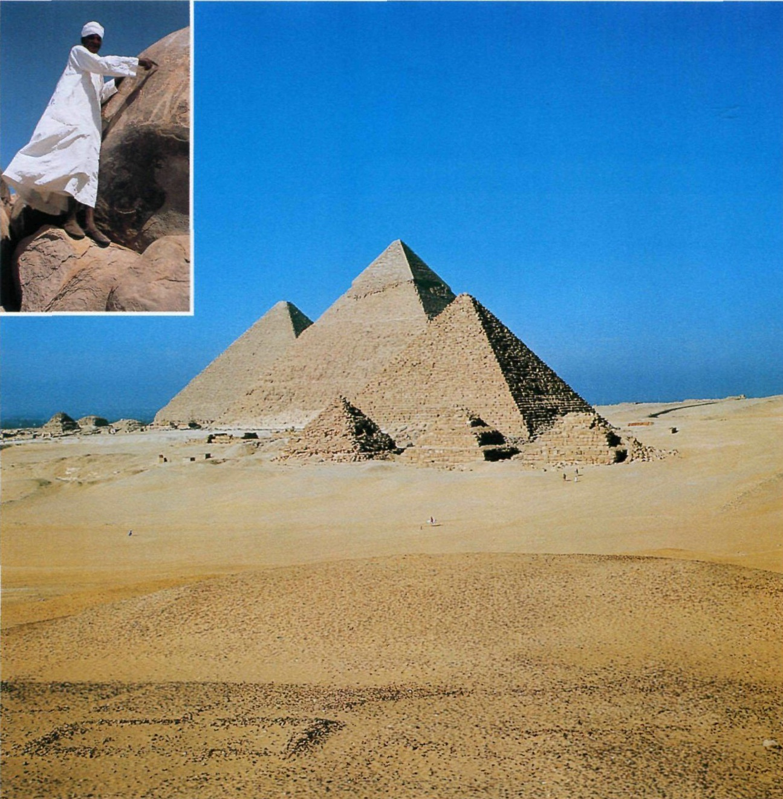
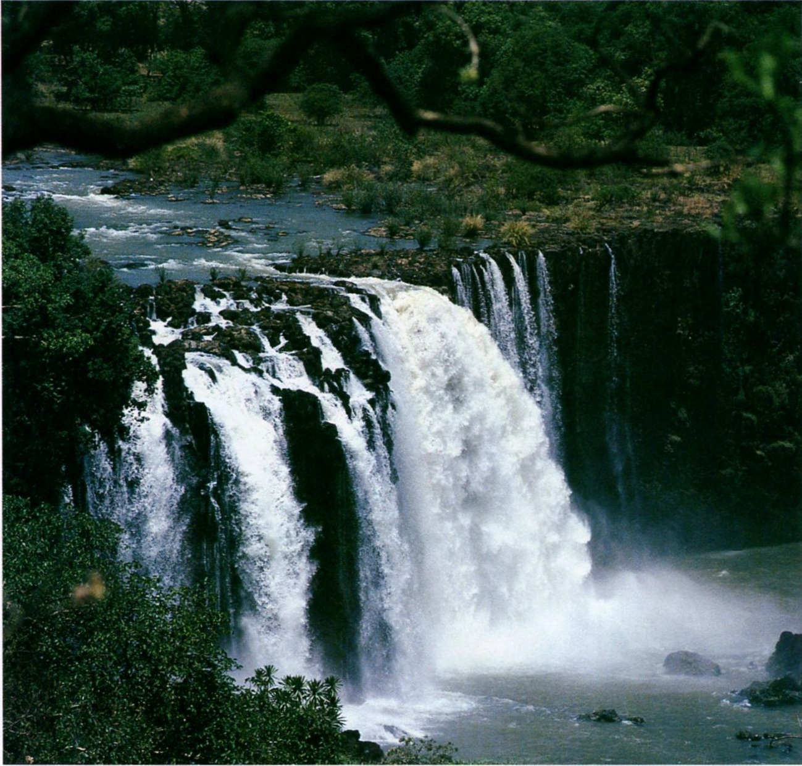
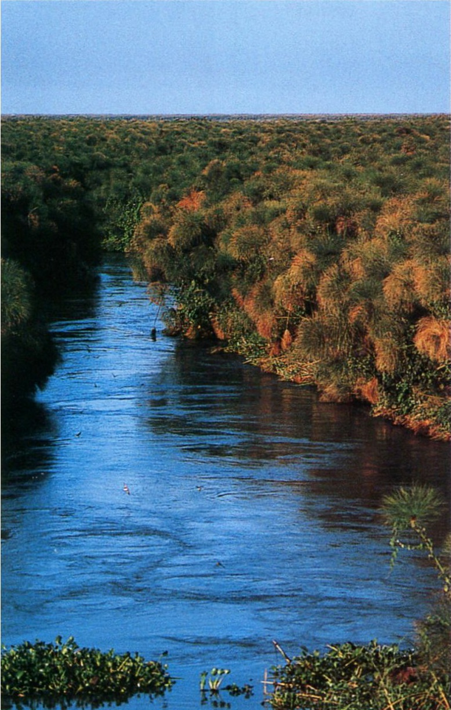

- В 1988 году египтянин Нагиб Махфуз первым из арабских писателей получил белевскую премию в области литературы. Место действия романов Махфуза — его родной город Каир. В 1994 году фанатик-исламист совершил покушение на жизнь писателя, нанеся ему тяжелые ранения.
- Одна из крупнейших исторических личностей в истории Египта — генерал Гамаль Абдель Насер (1918-1970 годы). С 1943 года он собирал вокруг себя офицеров единомышленников, с помощью которых в 1952 году совершил государственный переворот и сверг короля Фарука I. В 1953 году Фарук бежал за границу — и Насер провозгласил республику.
- Большой ущерб туристическому бизнесу Египта наносит непрекращающаяся активность террористических группировок, а также близость Палестины, где не утихает палестино-израильский конфликт.
ЕГИПЕТ
Земля фараонов

В пустыне, неподалеку от Каира, возвышаются самые знаменитые надгробия на свете — пирамиды. Пирамида Хеопса — единственное из древних семи чудес света, которое сохранилось до наших дней.
В ЦАРСТВЕ БОГА СОЛНЦА
Пирамиды в Гизе — это памятник исчезнувшей египетской цивилизации. Сегодняшнее культурное самоощущение египтян основано на их принадлежности к арабскому миру. В этом пространстве государство Египет — один из признанных лидеров, а со времен президента Анвара Садата еще и посредник между арабскими странами и западным миром.
- Пирамиды и Сфинкс
- Долина царей - гробница Тутанхамона
- Древние города Мемфис и Фивы
- Храм в Абу-Симбеле
- Официальное название: Арабская Республика Египет (с 1953 года).
- Столица: Каир (17.1 млн жителей)
- Крупнейшие города: Александрия, Суэц, Гиза, Порт-Саид
- Денежная единица: египетский фунт.
- Религии: суннитская ветвь ислама (90%), коптское христианство (9,5%).
- Язык: арабский.
Теплый влажный на Средиземноморском побережье (слабые колебания температуры: 13,5*С в январе, 26*С в августе). Очень жаркий и сухой по мере продвижения в глубь страны.
Богу Солнца Ра поклонялись в период расцвета египетской культуры, который пришелся на 2640-2160 годы до н.э. Именно в это время, в царствование фараонов Джосера, Снофру, Хеопса, возводились огромные пирамиды и храмы. Международная торговля приносила властителям сказочные богатства. Однако современный Египет уже давно не стремится накапливать горы золота и серебра — страна видит свою роль в посредничестве между западным и арабским миром. В свое время это решение стоило Египту десяти долгих и тяжелых лет изоляции — после того как в 1979 году президент Анвар Садат подписал в Кэмп-Дэвиде мирный договор с Израилем, соседние арабские страны объявили Египту бойкот. Да и внутри страны проводимая Садатом открытая политика не у всех встречала поддержку. После убийства Садата его преемник Хосни Мубарак продолжил вести умеренную политику своего предшественника. Сегодня Египет снова является членом Лиги арабских государств и по праву занимает место одного из лидеров арабского мира.
- Площадь: 1 001 450 км2.
- Население: 77,5 млн человек (самая густонаселенная страна Африки после Нигерии).
- Самая высокая точка: гора Синай (2642 м).
Туризм. Добыча нефти, природного газа, производство электроэнергии. Промышленность: автомобилестроение, текстильная и пищевая. Сбор пошлины за проход через Суэцкий канал. Сельское хозяйство: выращивание пшеницы, кукурузы, риса и хлопка
ЖИЗНЬ ВДОЛЬ РЕКИ
Почти вся территория Египта располагается в засушливых тропиках. Однако благодаря Нилу, самой длинной реке в Африке, страну все же нельзя назвать сплошной пустыней.
Территория Египта превышает 1 млн км2, но лишь около 4% этой земли обитаемы и возделываются. Эта огромная африканская страна, захватывающая краем и Синайский полуостров в Азии, практически полностью состоит из пустынь и полупустынь. Река Нил, протекающая по всей территории страны, — это средоточие жизни Египта. У побережья Средиземного моря река расширяется, образуя обширную дельту: здесь расположились крупнейшие города Египта, в том числе и его столица Каир с 17-миллионным населением. Большинство египтян живет на узких, но плодородных полосах земли на берегах Нила. В древности в августе — сентябре, в период разлива, вода орошала берега и покрывала их плодородным илом, что позволяло выращивать там кормовые и озимые культуры. Подавляющая часть населения Египта и сейчас живет земледелием. С тех пор как была построена плотина в Асуане, урожайность полей в долине Нила стала меньше зависеть от паводков. Гигантская плотина регулирует потоки воды в период половодья и направляет воды Нила в озеро Насер. Тем не менее решить проблему нехватки продовольствия не удается. За последние 30 лет численность населения удвоилась, а вместе с ней — и потребность в продуктах питания. Невозможно переоценить то значение, какое имеет для Египта эта самая длинная река африканского континента, протянувшаяся на 6671 км в длину. Чтобы понять это, достаточно обратиться к истории египетской культуры. Люди издавна верили в божественное происхождение Нила. Веками античные ученые спорили о его истоках. Например, Геродот был уверен, что Нил берет свое начало в районе между островами Сиена и Элефантина. В действительности же Нил вытекает из озера Виктория, расположенного в жарком и влажном регионе Центральной Африки. Последние 3000 км своего пути к морю река течет через пустыню, оставаясь при этом почти такой же полноводной. На своем пути с юга на север Нил пересекает три климатические зоны (экваториальную, тропическую и зону пустынь). На севере Египта Нил минует Каир и впадает в Средиземное море. Разделяясь на несколько рукавов, река устремляется к бывшей морской бухте южнее Александрии. По пути Нил орошает «черную землю» — наносные массивы, формировавшиеся на протяжении столетий. Для Египта, так же как и для Судана, Нил является бесценным сокровищем. На его берегах, образующих вечнозеленый оазис, можно увидеть крестьян и рыбаков, торговцев и туристов. И все же Нил несет египтянам не только благословенную влагу. В прошлом споры о распределении воды неоднократно вызывали конфликты между Египтом и Суданом, грозившие обернуться настоящей войной.

Нил — самая длинная река африканского континента. Но далеко не везде его воды текут так неторопливо и спокойно, как мы привыкли видеть на открытках. В Судане, вблизи Хартума, Голубой Нил ускоряет бег — и воды реки превращаются в грохочущие водопады.

Местами берега Нила покрыты пышной растительностью. Здесь растут деревья и кустарники самых разных пород, например пальмы и эвкалипты.